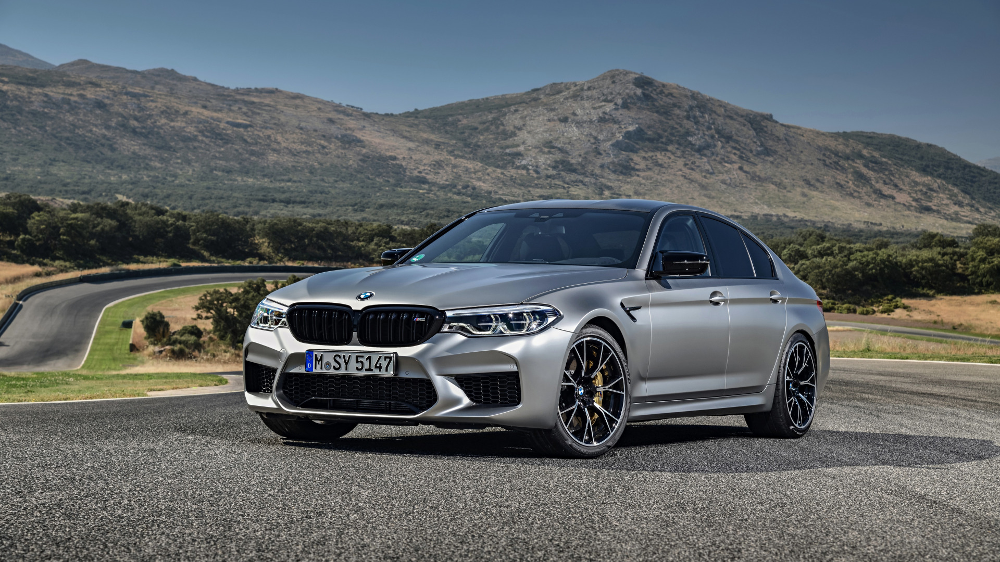
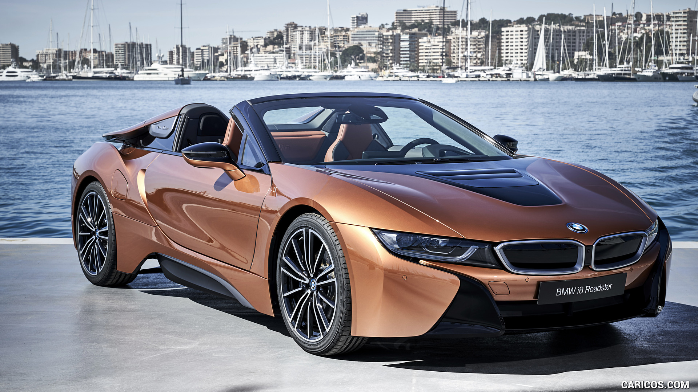
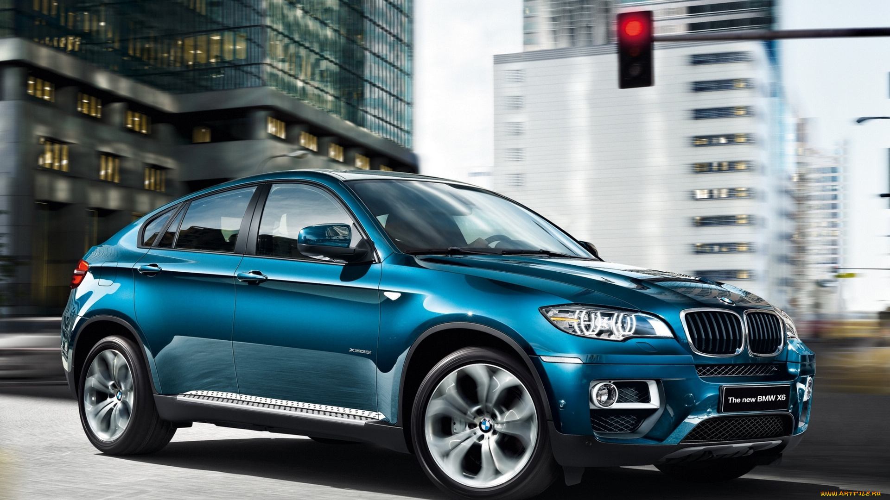
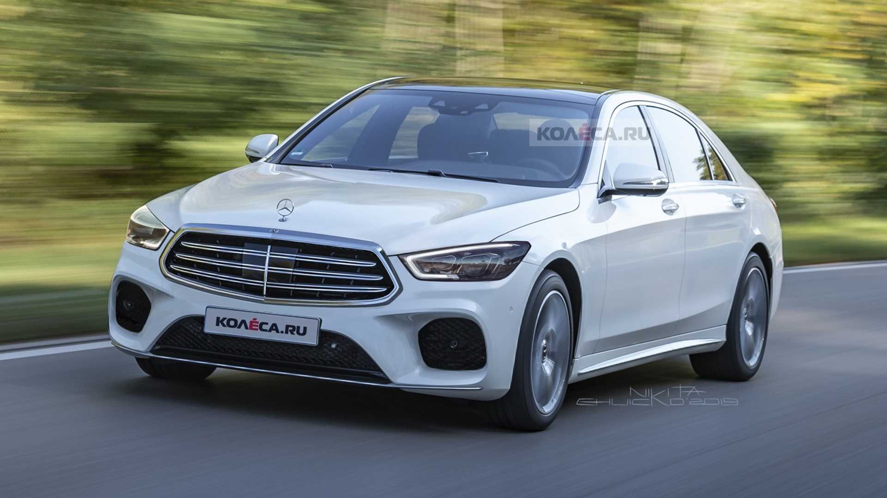
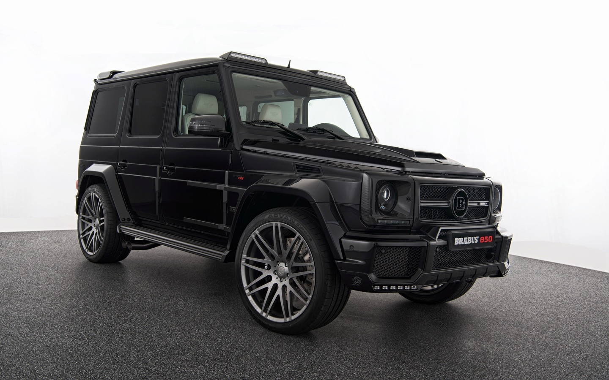
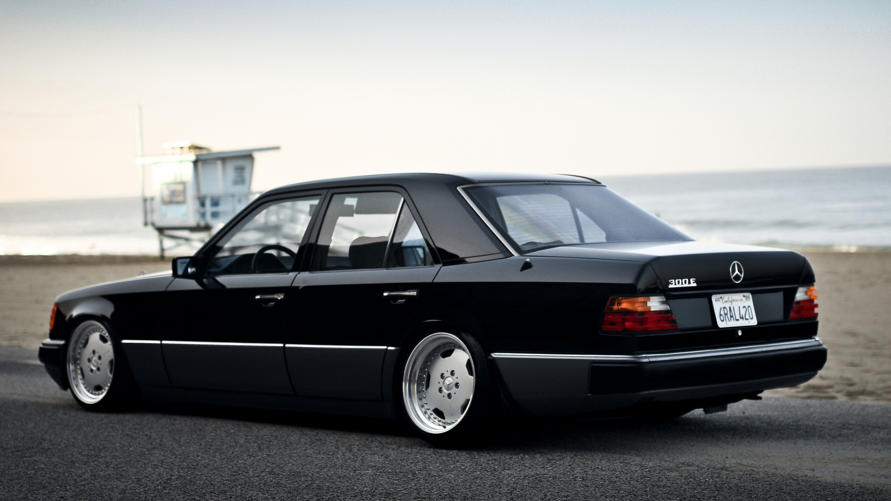
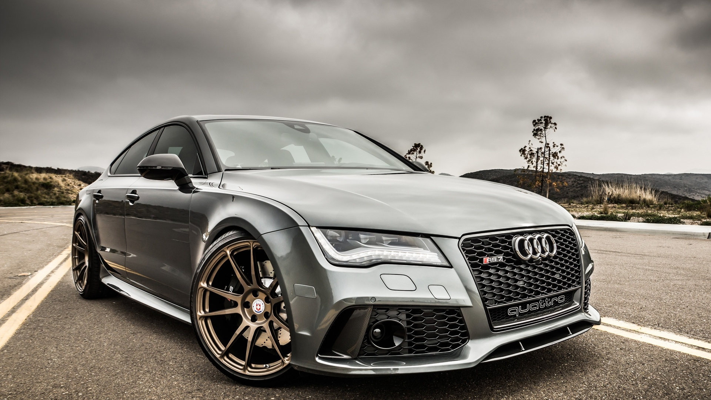
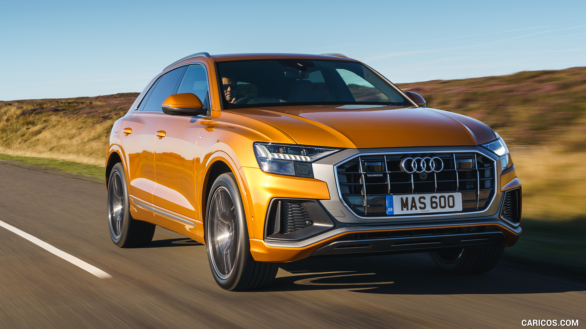
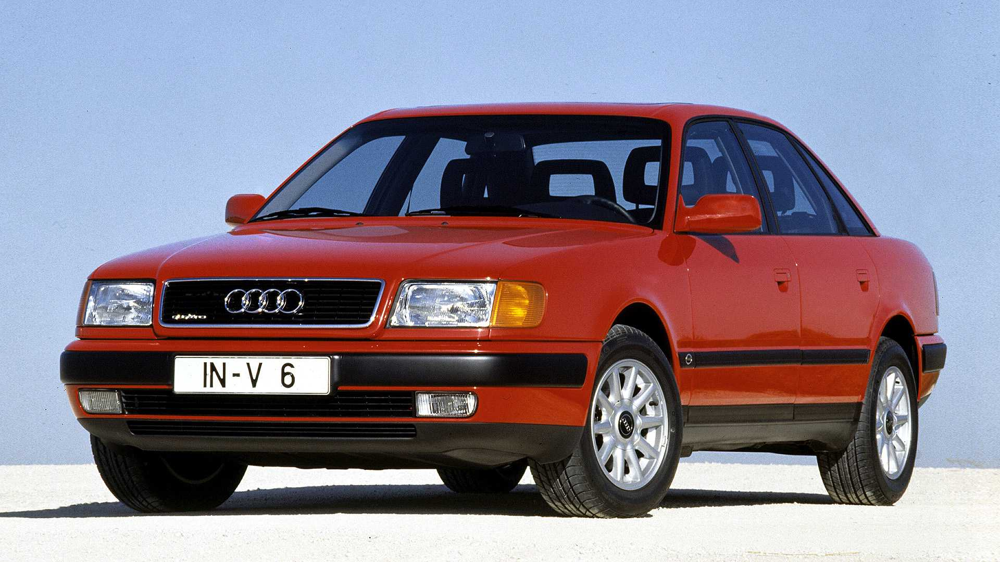

Марки авто
 BMW M5 - доработанная подразделением BMW Motorsport версия автомобиля BMW пятой серии. Первое поколение было представлено в 1986 году. Последующие поколения M5 сменялись совместно с каждым поколением автомобилей пятой серии, включающей E34, E39, E60/61, F10. С началом производства модели G30, после поступления первых заказов, с марта 2018 года началось также производство её M-версии.
 BMW i8 - автомобиль компании BMW. Концепт-кар был представлен в 2009 году, первый серийный образец — на Франкфуртском автосалоне в сентябре 2013 года. BMW Vision Efficient Dynamics представляет собой полноприводное двухдверное купе. Шасси и подвеска сделаны из алюминия, крыша и двери выполнены из поликарбоната. Коэффициент аэродинамического сопротивления 0,26.
 BMW X6 - среднеразмерный кроссовер, выпускаемый компанией BMW. Он сочетает в себе как признаки внедорожника (полный привод, большой дорожный просвет, большие колёса, тяговитый двигатель), так и признаки купе (сильный скос крыши в задней части автомобиля). Сама компания классифицирует данный автомобиль как Sports Activity Coupé (SAC) — спортивное купе для активного отдыха.
 Mercedes-Benz W223 - седьмое поколение флагманской серии представительских автомобилей S-класса немецкой марки Mercedes-Benz, выпускающееся с 2020 года. Пришло на смену модели W222 и базируется на втором поколении фирменной модульной платформы MRA. Презентация серии состоялась 2 сентября 2020 года. Продажи в России стартовали в декабре 2020 года.
 Mercedes-Benz G-класс иногда именуемый G-Wagen (G — сокр. от нем. Geländewagen — [ɡəˈlɛːndəvaːɡn], «внедорожник»), — серия полноразмерных внедорожников (автомобилей повышенной проходимости), производимых в Австрии фирмой Magna Steyr[1][2] (ранее Steyr-Daimler-Puch[3]) и продаваемых под торговой маркой Mercedes-Benz. Выпускается с 1979 года по настоящее время. G-класс был разработан в качестве военного транспортного средства по предложению иранского шаха Мохаммеда Реза Пехлеви[1][3][4], в то время являвшегося акционером компании Mercedes-Benz. Гражданская версия автомобиля была представлена в 1979 году.
 Mercedes-Benz W124 - серия легковых автомобилей бизнес-класса немецкой торговой марки Mercedes-Benz, которая производилась в 1984—1996 годах. Впервые была представлена в 1984 году и предназначалась для замены моделей серии W123. В 1995 году автомобили W124 с кузовом седан уступили своё место в модельном ряду фирмы Mercedes-Benz следующему поколению семейства E-класса W210; автомобили с кузовом универсал (S124) оставались на конвейере заводов в Зиндельфингене, Бремене, Раштатте до апреля 1996 года.
 Audi RS 7 - спортивный пятидверный фастбэк класса Гран Туризмо выпускаемый подразделением Audi Sport GmbH на платформе Audi A7[1]. Автомобиль был представлен 16 января 2013 года на Североамериканском международном салоне в Детройте[2]. Самая мощная и дорогая по цене спортивная версия модели представительского фастбэка Audi A7, характеристики которой равны автомобилю класса суперкаров (серия RS)[3][4]. Существует менее мощная спортивная версия Audi S7 (серия S).
 Audi Q8 - спортивный кроссовер от немецкого производителя автомобилей Audi. Концепт Audi Q8 был представлен публике 9 января 2017 года на Североамериканском международном автосалоне (NAIAS) в Детройте, США. Премьера серийной версии состоялась в мае 2018 года на Шеньчженьском автосалоне в Китае[2]. Спортивная версия RS Q8 будет показана позже на Женевском автосалоне[3]. Тестирование спортивных версий Q8 - SQ8 и RS Q8 уже проходят[4].
 Audi 100 - название семейства легковых автомобилей бизнес-класса, производившихся в ФРГ компанией Audi с 1968 по 1994 годы. Все поколения модели имели определённую техническую преемственность между собой и сохраняли заложенные с самого появления модели базовые принципы — в первую очередь, переднеприводную компоновку с продольным расположением двигателя. Audi 100 C3 продавалась в США под названием Audi 5000 до 1988 года.
Модель Audi 200 представляла собой более дорогую версию Audi 100, отличавшуюся повышенным уровнем базовой комплектации, улучшенной внешней и внутренней отделкой, оснащалась только пятицилиндровыми двигателями, в том числе — с турбонаддувом.